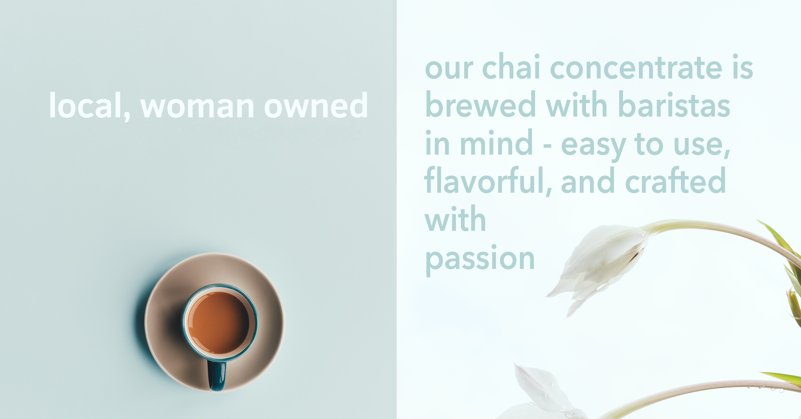

				<!-- Banner -->
					<section id="banner" style="background-image: -webkit-linear-gradient(top, rgba(0,0,0,0.5), rgba(0,0,0,0.5)),url(/images/home.jpg); background-size: cover;">
						<div class="inner">
							<h2></h2>
							<p></p>
							<!-- <ul class="actions">
								<li><a href="#" class="button special">Activate</a></li>
							</ul> -->
						</div>
						<a href="/shop.html" class="more scrolly">Learn More</a>
					</section>


					<div class="12u"><span class="image fit" style="margin: 0"></span></div>
					<div class="12u"><span class="image fit" style="margin: 0"></span></div>
				<!-- One -->
					<!-- <section id="one" class="wrapper style1 special">
						<div class="inner">
							<header class="major">
								<h2>Arcu aliquet vel lobortis ata nisl<br />
								eget augue amet aliquet nisl cep donec</h2>
								<p>Aliquam ut ex ut augue consectetur interdum. Donec amet imperdiet eleifend<br />
								fringilla tincidunt. Nullam dui leo Aenean mi ligula, rhoncus ullamcorper.</p>
							</header>
							<ul class="icons major">
								<li><span class="icon fa-diamond major style1"><span class="label">Lorem</span></span></li>
								<li><span class="icon fa-heart-o major style2"><span class="label">Ipsum</span></span></li>
								<li><span class="icon fa-code major style3"><span class="label">Dolor</span></span></li>
							</ul>
						</div>
					</section> -->

				<!-- Two -->
					<!-- <section id="two" class="wrapper alt style2">
						<section class="spotlight">
							<div class="image"></div><div class="content">
								<h2>Magna primis lobortis<br />
								sed ullamcorper</h2>
								<p>Aliquam ut ex ut augue consectetur interdum. Donec hendrerit imperdiet. Mauris eleifend fringilla nullam aenean mi ligula.</p>
							</div>
						</section>
						<section class="spotlight">
							<div class="image"></div><div class="content">
								<h2>Tortor dolore feugiat<br />
								elementum magna</h2>
								<p>Aliquam ut ex ut augue consectetur interdum. Donec hendrerit imperdiet. Mauris eleifend fringilla nullam aenean mi ligula.</p>
							</div>
						</section>
						<section class="spotlight">
							<div class="image"></div><div class="content">
								<h2>Augue eleifend aliquet<br />
								sed condimentum</h2>
								<p>Aliquam ut ex ut augue consectetur interdum. Donec hendrerit imperdiet. Mauris eleifend fringilla nullam aenean mi ligula.</p>
							</div>
						</section>
					</section> -->

				<!-- Three -->
					<!-- <section id="one" class="wrapper style3 special">
						<div class="inner">
							<header class="major">
								<h2>Brewed with Premium Spices</h2>
								<p>Every batch is brewed with high quality spices that provide a flavor pack cup of tea.<br />
								Bringing the cooking skills of a chai wallah straight to your home.</p>
							</header>
							<ul class="features">
								<li class="icon vanilla">
									
									<h3>Vanilla</h3>
									<p>Like all fruits, vanilla begins with a flower: A single flower that opens up on only one day every year, and if you fail to pollinate it, that's it. No vanilla bean. As such, growers must inspect their plantations daily for any open flowers, a labor-intensive task. Did you know? after saffron, vanilla is the second most expensive spice in the world!</p>
										<br><p>Regarded as one of the world's most popular aroma and flavors. Its origin can be traced back thousands of years and is now widely used in foods and beverages. Although it is native to Mexico, it is now widely grown throughout the tropics. Indonesia and Madagascar are the world's largest producers.</p>
								</li>
								<li class="icon fa-laptop">
									<h3>Cardamom</h3>
									<p>Cardamom, native to India and other surrounding areas, is a spice like no other. This complex ingredient is most commonly used in Indian cuisine, and brewing a nice batch of chai. The flavor profile of cardamom varies among each person who consumes it. Notes of citrus, spice, and herbal undertones are common regards of cardamom.</p>
										<br><p>It can be used for almost any cooking and baking experience imaginable. From desserts to tandoori chicken, cardamom will be your best friend, and gateway to a whole new level of flavor.</p>
								</li>
								<li class="icon fa-code">
									<h3>Cinnamon</h3>
									<p>The beauty of cinnamon is its ability to shapeshift into both sweet and savory delights. It is a spice that has both rich history and a familiar place in the homes of everyone. At one point, Cinnamon was so highly esteemed among ancient nations that it was regarded as a gift fit for monarchs and deities. In today’s world, it is one of the most widely used spices.</p>
										<br><p>Cinnamon is as flavorful as it is aromatic. Full of complex sweet and spicy undertones, and a wood-like golden brown color, cinnamon can also be used to garnish drinks and goods. The possibilities are endless with this spice.</p>
								</li>
								<li class="icon fa-headphones">
									<h3>Cloves</h3>
									<p>Clove is naturally an evergreen tree that can grow up to 12 m tall, and has large leaves and crimson flowers grouped in terminal clusters. The cloves we are familiar with in day-to-day cooking, are the flowers harvested at 1.5–2.0 cm long, and come to a ball shape at the very end.</p>
										<br><p>Cloves have one of the most unique flavors out there. The taste is pungent, strong and sweet with a bitter, astringent undertone. Cloves also have a distinct warm characteristic that can be almost a feeling of heat, and cause a tingling sensation on the tongue.</p>
								</li>
								<li class="icon fa-heart-o">
									<h3>Anise</h3>
									<p>Anise, a very distinct and flavorful spice, was originally cultivated in the Middle East and Egypt, and was brought to Europe for its medicinal benefits. The spice has historically been used as a digestive aid, a menstrual cramp reliever, and an antiseptic.</p>
										<br><p>The best flavor association for anise is black licorice and fennel. This characteristic makes the spice a great additive for baking and candy making. It is also a common ingredient in alcohols and liqueurs.</p>
								</li>
								<li class="icon fa-flag-o">
									<h3>Ginger</h3>
									<p>Ginger provides a mildly spicy kick to any dish or drink when used in a large enough quantity. It was originally cultivated in Southeast Asia, and was transported to Europe during the spice trade.</p>
										<br><p>Aside from its unique and bold flavor, ginger also has unbelievable health properties. From relieving nausea, improving loss of appetite, motion sickness, and overall aches and pains, consuming ginger daily is a great healthy addition.</p>
								</li>
							</ul>
						</div>
					</section> -->

				<!-- CTA -->
					<section id="cta" class="wrapper style4">
						<div class="inner">
							<header>
								<h2>Contact Us</h2>
								<p>If you interested in wholesale options or have any questions please contact us</p>
							</header>
							<ul class="actions vertical">
								<li><a href="/contact.html" class="button fit special">Contact</a></li>
								<li><a href="/learn.html" class="button fit">Learn More</a></li>
							</ul>
						</div>
					</section>
